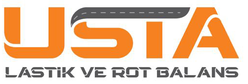

Yazlık ve kışlık lastik değişimi profesyonel ekipmanlarla yapılır.
Aracınızın yol tutuşunu artıran hassas rot balans ayarı.
Jant kontrolü, hava basıncı ayarı ve genel kontrol hizmetleri.
Yetkili: Nazım Kuru
Telefon: +90 534 411 44 45
E-posta: nazim@ustalas.com
Adres: Maslak Mh. Atatürk Oto San.Sit. 36. Sokak No: 1494-1495
Sarıyer / İstanbul